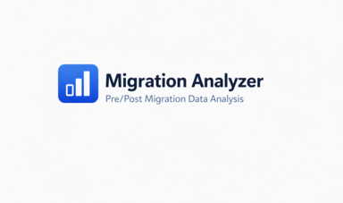
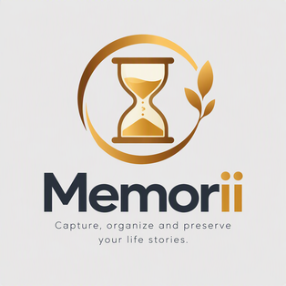
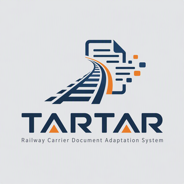

Mykola Kiianovskyi
20+ years of experience in business process automation, corporate system development and data analysis.
About Me
IT specialist with over 20 years of experience in software development, business process automation and enterprise system support.
Worked with SAP, Oracle, SQL, PostgreSQL and modern web technologies.
Currently building web applications with React, TypeScript and Supabase.
- 20+ Years Experience
- Full Stack Development
- SAP Expertise
- Data Analytics
- Business Automation
Statistics
-
20+
Years in IT
-
20+
Completed Projects
-
5+
Technology Domains
-
1000+
Business Users Supported
Technical Stack
Skills grouped by focus areas
Backend
Databases
Enterprise
Data Analysis
Tools
Career Journey
-
Data Analyst
2024 — Present · Independent practice
- Data cleansing and preparation
- Data transformation and filtering
- Visualization and report development
- Business intelligence dashboards
-
Consultant SAP SD, QM
05/2024 — Present
- Configuring SD/QM functionality (company codes, markets, trade documents)
- Preparing business process documentation and technical specifications for ABAP developers
- User consultation
- Creating roles, transactions and reports
- Preparing analytical information for key users
- Archiving historical QM and SD data: preparation and analysis
- Data reconciliation after migration
-
Consultant SAP SD
03/2017 — 05/2024
- Configuring SD/QM functionality (company codes, markets, trade documents)
- Preparing business process documentation and technical specifications for ABAP developers
- User consultation
- Creating roles, transactions and reports
- Preparing analytical information for key users
-
Project Manager, IT Consultant, Data Analyst, Developer
2013–2017
- Managing project teams (5–15 participants)
- Market analysis of solutions, search for contractors, preparation of development documentation
- Time management, negotiations with stakeholders
- Preparing data for regular reporting and data analysis
- Developing and improving business applications
- User consultation
- Supporting developed IT systems
-
Head of Division, Lead Software Engineer, ArcelorMittal Kryvyi Rih
2001–2013
- Organizing, planning and managing the work of the IT division
- Developing and implementing an IT system (Oracle)
- Preparing business process documentation for the enterprise
Work experience
20+ years in SAP, software development and analytics
Detailed experience: SAP SD/QM, Oracle and PL/SQL, IT project management, data analysis and leading divisions. The full timeline, education, projects and additional skills are on a dedicated page.
Featured Projects
Selected works with live demos and source code
Accounting system for a gardening community.
GardenPay

Data migration analyzer built with React, TypeScript, Node.js, Express and Vite. A web application for comparing datasets before and after migration.
Migration-Data-Analyzer

A platform for storing personal knowledge and memories.
Memorii
A converter of school schedules from Excel to Google Calendar.
Schedule To ICS
Regional News Intelligence Platform.
NAIAN

Automated adaptation of railway transportation acts received from carriers.
Railway Carrier Document Adaptation System
Education
Bachelor's Degree in Automation of Computer-Integrated Systems and Robotics
Kryvyi Rih National University
Master's Degree in Economics
Kryvyi Rih National University
Specialist Degree in Economics and Mathematics
Kryvyi Rih National University
Bachelor's Degree in Economic Cybernetics
Kryvyi Rih National University
Why Me
Unique value proposition
Enterprise Expertise
Over 20 years of experience with SAP, Oracle and enterprise systems.
Business Understanding
Deep understanding of business processes and user requirements.
Full Stack Development
Building modern web applications from the database to the user interface.
SAP Consultant
Creating technical specifications, configuring and supporting business processes.
Data Analyst
Data analysis: Excel, Google Sheets, Python, R, Power BI, Tableau.
Project Management
Implementation of Documentum electronic document management at the enterprise. Implementation of an electronic archiving system.
Contact
Get in touch